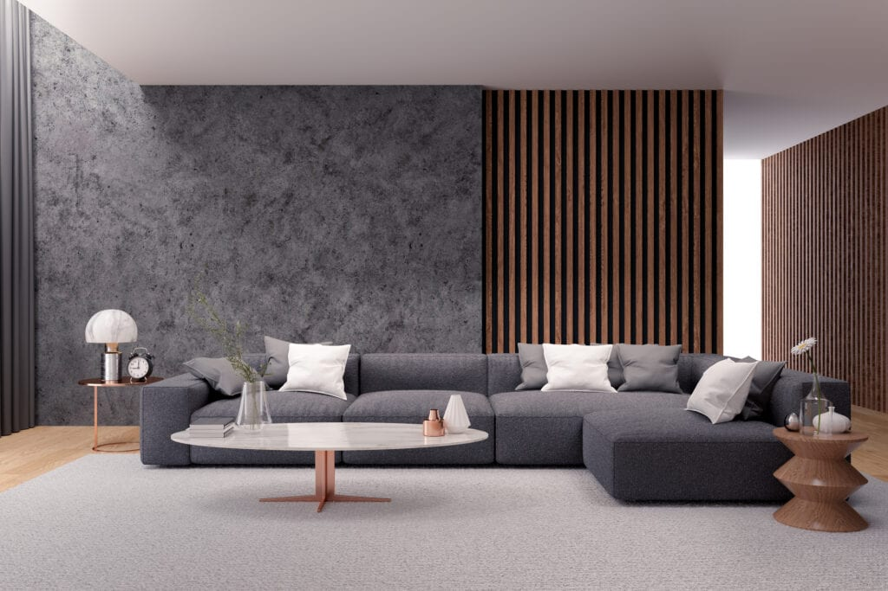

Interior desing & deocrating service
An Amazing New Interior Starts Here
Need to have your new home decorated or existing interior given a design refresh? Our end-to-end service has you covered.
We make it easy, from start to finish, to completely re-imagine your space.
From consult to quote, sourcing products to styling them in your space, this service takes the hard work out of the equation for you.
It’s simple and stress-free.
You can be completely involved in the journey if you wish, or take a back seat and let us experts drive the decorating decisions on your behalf.
We recognise that every client is different; varying locations, budgets, design requirements and style preferences.
Thankfully, we’ve decorated most of Melbourne, from one-bedroom homes in South Yarra, to family homes in Bentleigh, right up to $3 million homes in Park Orchards. We enjoy the variety and embrace a challenge.

How The Service Works
1. Consult
We’ll start with a free phone consultation to get an idea of how we can help.
You then have the option to book an in-home consultation, which lasts up to 90 minutes.
This is an opportunity to ask our lead designer Chris anything and everything you wish to.
He’ll also take a full design brief from you, conduct a style analysis, and make a wish list of products we’d need to bring in achieve your design dreams.
Please note that a consult meeting is no guarantee that we’ll take on your project.
Both parties are under no obligation to move forward after the first meeting.
There are a variety of reasons on both sides (be it personality fit, budget, timeframes, design style and more) that might mean we’re not the right designers for you.
That said, the majority of in-home consults do move on to the next step.
2. Concept
After your meeting, Chris will be able to provide you with an estimate of the overall costs. This is based on how many hours he believes will be required to complete the transformation, and how much he thinks you’ll spend on decor and furniture, plus any trade costs.
If you’re happy with the estimate, we take a deposit and get to work. Soon after, we’ll present you with a fully realised concept for your space including to-scale floor plans, mood boards of each room, plus real-world examples of the products we intend to bring into your home.
You’ll also get loads of inspirational imagery to show you what your home could look like once we’ve transformed it.
We work together to get the concept spot-on; we talk you through the plan for each room and note your feedback down. This is our blueprint for how to bring your home to the next level and make it everything you dreamed it could be.
3. Specify
Once we fine-tune the concept, we’ll start specifying products for your home. This is the point in the process where decisions need to be made. You’ll receive a full product specification sheet per room with images, costs and dimensions of each item we intend to purchase on your behalf. Once you approve the products, we’ll invoice you and organise ordering and delivery with our suppliers.
4. Style
Once all of the products are paid for and delivered to your home, we’ll come and style the rooms so they reach their full design potential.

 Facebok
Facebok Instagram
Instagram Contact
Contact
© Copyright NB Interiors 2022